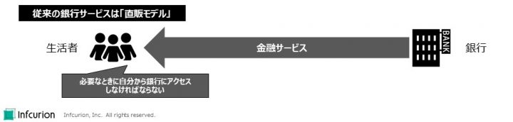
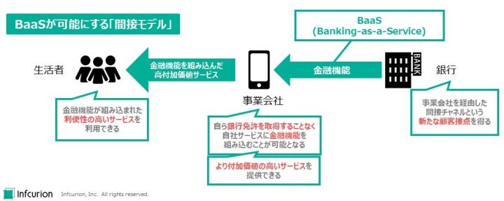

2018年にスタートした「電子決済等代行業」の制度。銀行が提供するオープンAPIを介して、銀行と異業種との連携によるオープンイノベーションを促進するものです。国内銀行による対応もかなり進み、都銀・地銀・第二地銀の多くでは個人口座の参照と資金移動のためのAPIが既に整備されています。
API活用の面では、家計簿サービス業界においてスクレイピングをオープンAPIで置き換えていく事例が出てきていますが、「異業種サービスへの銀行サービスの組み込みを可能にする」というオープンAPIの力を活かした取り組みはまだ始まったばかり。銀行側としても、せっかく作ったオープンAPIの活用法がイメージできていないのが実情ではないでしょうか。
そこで今回は、「オープンAPIならでは」のサービス提供形態であるBanking-as-a-Service（BaaS）について、米国の大手投資銀行Goldman Sachs（ゴールドマン・サックス）の事例を用いて紹介していきます。Goldman Sachsは言わずと知れた海外の超大手金融機関ですが、近年はリテールバンキング分野への新規参入に取り組んできています。強豪がひしめく中でGoldman Sachsが活路を見出したのがBaaSでした。国内銀行にとっても、「API型リテールバンキング」のイメージを掴むには良い事例だと思います。
なお、日本国内でもBaaSへの取り組みは着実に進んでおり、新生銀行グループの「BANKIT」、そして住信SBIネット銀行と日本航空による「JAL NEOBANK」といった事例が出てきています。これら国内事例についてはまた別の機会に考察したいと思います。
関連リンク：
- 「平成30年6月から、「電子決済等代行業」に関する新しい制度がはじまりました。」、金融庁
- 「銀行と電子決済等代行業者との間の契約締結等の状況について」、金融庁
- 「家計簿サービス等に関する実態調査報告書」、公正取引委員会、2020年4月
- 「ネオバンク・プラットフォーム「BANKIT®」のパートナー企業向けシステム提供開始について」、新生銀行グループ、2020年3月26日
- 「BANKIT」のWebサイト（https://www.bankit.jp/）
- 「JALマイレージバンク会員向け銀行サービス「JAL NEOBANK」誕生」、日本航空、住信SBIネット銀行、2020年4月27日
目次
リテールバンキング戦略におけるBaaS
投資銀行の巨人・Goldman Sachsですが、時流の変化に合わせて自己変革していかなければならないのは全ての企業の宿命です。特に近年は、預金を集め貸し出すという商業銀行業務、特に消費者と中小事業者を対象とするリテールバンキングの強化を経営戦略の一つに位置づけています。同社はリテールバンキングにおいては新規参入者ということになりますが、店舗網・ATM網・ブランド認知を持つ競合他社に対して同じフィールドで戦うことは極めて困難です。
そこでGoldman Sachsがまず目を付けたのがデジタルバンキング。2016年には、同社の共同創業者の名前を冠した「Marcus」ブランドでのネットサービスを展開、優遇金利での預金獲得と個人向け融資事業への取り組みを開始しました。現在では「Marcus」はGoldman Sachsのリテールバンキングサービスのブランドとなっています。
Goldman Sachsのリテールバンキングの足掛かりとなった「Marcus」ですが、デジタルバンキングも従来型バンキングにも共通する根本課題があります。「直販モデルである」ということです。

従来の銀行サービスは「直販モデル」
従来の銀行サービスでは、生活者たるユーザーは、必要な時に自分から店舗やATMを訪れたりアプリにログインしたりというように、銀行が用意したチャネルにアクセスしなければなりません。銀行のチャネルにおいて銀行と直接やりとりしなければならないという点で「直販モデル」と筆者は呼んでいます。銀行管理下でサービスを受けられるという点は安心に繋がりますが、生活者の日常行動から自然にアクセスするような導線にはなっていないのが課題です。日常的・継続的な接点となる要素にも極めて乏しいのも問題です（たとえアプリの出来が良くとも、銀行アプリに毎日アクセスするようなことは想像しがたいですよね）。
しかしリテールバンキングはとにかく規模の確保が命。収益につながるトランザクションを獲得するには日常的に接点を維持して、生活や業務のなかで生じた金融ニーズを汲み取ることが重要となります。ユーザーの日常生活・日常業務への密着がキモとなりますが、従来の「直販モデル」には限界があります。
そこでGoldman Sachsが取り組んだのが、「API型リテールバンキング」ともいえるBaaSです。これは、銀行がユーザーに直接サービス提供するのではなく、ユーザーが普段から利用している異業種サービスの中に金融サービスを組み込むことで、事業者を経由した間接的なサービス提供を実現するのが特徴で、筆者はこれを「間接モデル」と呼んでいます。

BaaSが可能にする「間接モデル」
BaaSによる「間接モデル」においては、銀行・事業会社・生活者それぞれにメリットがあります。
- 銀行は、事業会社を経由した間接チャネルという新たな顧客接点を得られる
- 事業会社は、自ら銀行免許を取得することなく自社サービスに金融機能を組み込むことが可能になり、より付加価値の高いサービスをユーザーに提供することができる
- 生活者（ユーザー）は、金融機能が組み込まれた、利便性の高いサービスを利用できる
特に銀行にとっては、大規模なユーザー基盤を持った事業者へのBaaS提供によって、自力ではアクセスすることもできなかった多くのユーザーを獲得することが可能になります。
リテールバンキングで後発のGoldman Sachsも、この点に着目しました。店舗網・ATM網では競合に大きく劣っていても、BaaS活用でまったく違う戦い方が可能になるのです。
Goldman SachsのBaaSは、2019年の「Apple Card」で大きな成功を収めました。そして2020年初頭に開催した同社初の投資家イベントでは、資料にBaaS戦略がはっきりと明記されたのでした（https://www.goldmansachs.com/investor-relations/investor-day-2020/presentations/consolidated-presentations.pdfの197枚目）。
Goldman SachsによるBaaS事例
執筆時点で、同社のBaaS事例は既に4件あります。
Apple Card
2019年に米国にて発行が開始された、Apple社によるクレジットカードです。チタン製のおしゃれなカードデザインが注目を集めましたが、その実態はアプリを主体とするバーチャルカード。そしてアプリが提供するユーザー体験（User Experience; UX）はどこまでも「Apple流」が貫かれています。そのUXの斬新さはこちらの記事で紹介しました。
関連記事：
- 「バーチャルカードとしての「Apple Card」の斬新さ」、インフキュリオン・インサイト、2020年2月7日
ここで重要なのは「Apple Card」はGoldman SachsのBaaSを用いて実現されているということ。Apple自身はカード発行やカード決済に関する許認可やライセンスを自前で取得することなく、独自のUXの提供に注力。そしてカードとそれに伴う口座業務のすべてはGoldman Sachsが担い、必要なデータは全てAPI経由でリアルタイムに連携する、というフォーメーションです。
なお、これは一見すると、「日本でもよくある提携カードモデルではないか」というようにも見えます。日本の一般的な提携カードモデルとBaaSの違いは「UXを掌握しているのが誰なのか」と筆者は考えます。
例えば日本のスーパーの提携カード。券面は確かにそのスーパーのデザインでしょうが、カード明細を確認するにはカード会社のサイトでログインしますし、請求もカード会社からです。ユーザーから見ると、カードとしてのUXはカード会社のものであって、スーパーは単に券面でしかないとも言えます。
BaaSで実現した「Apple Card」の場合、ユーザーが見るもの触れるもの全てAppleのものであって、カード明細や利用金額の支払いすらApple流の見せ方。カード口座を運営しているGoldman Sachsを意識することはほとんどないでしょう。上で図示した「間接モデル」を体現する事例であるといえます。
UXはApple、金融機能はGoldman Sachsという組み方で実現した「Apple Card」は大きな成功を収め、「米国クレジットカード史上最速の拡大を記録した」とまで言われています。実際、発行開始した翌月9月の末時点で取扱高100億ドルで残債7億3600万ドル、2019年12月末時点で20億ドルという数値が公表されています。「Apple Card」の成功で、Goldman SachsのBaaS事業は華々しいスタートを切ることができました。
「Apple Card」の実績値の出典：
JetBlueとMarcusPay
第2の事例は航空業界との提携。JetBlue Airways利用客への分割払いの提供で、サービス名は「MarcusPay」。新型コロナ禍の2020年4月に静かにスタートしました。金額の大きくなりがちな航空券の購入ですが、その購買フリクションを低減するというのがMarcusPayの狙い。購買時点で750ドル～1万ドルを最大18か月の分割払いにすることができます。パンデミックで航空旅客が激減した時期のスタートとなりましたが、サービス提供は継続しています。
出典：
Amazonでのビジネス融資
第3の事例はAppleに続くITの巨人との提携。米国Amazonマーケットプレイスに出店している中小事業者を対象とするビジネス融資です。Amazonとの提携交渉については2020年初頭から報道がありましたが、6月には実際にサービス開始となりました。
Amazonでのビジネス融資自体は数年前から既にあり、Bank of Americaとの提携もありますが、新たにGoldman Sachsとも組んでサービスをさらに拡大する模様です（Bank of Americaとの提携について特に報道はありませんので、こちらも継続していると見られます）。
面白いのは、Goldman SachsとしてはあくまでもSME融資に参入したという意識はないとのこと。あくまでも「ECマーケットプレイスでの出品者融資」との位置づけとのことです。自前チャネルでのSME融資は全く考えておらず、提携相手へのBaaS提供による「間接モデル」を追求する姿勢が鮮明です。
出典：
- 「An Interview With Goldman Sachs’ Head of Consumer Banking」、The Motley Fool、2020年7月22日
Walmartマーケットプレイスでのビジネス融資
第4の事例での提携相手はまたしても超大手企業、Walmartです。リアル小売の雄で、近年はAmazonへの対抗策としてデジタルサービスを強化しています。Goldman Sachsが提携したもの、Walmartが運営するマーケットプレイスでのビジネス融資。構造としては上で述べたAmazon事例と同じです。2020年9月サービス開始で、この提携によってWalmartはビジネス融資への初参入となりました。
出典：
- 「Goldman Sachs’ Marcus to Offer Credit Lines to Walmart Sellers」、Yahoo! Finance、2020年9月23日
まとめ
銀行オープンAPIの整備が進んでいる日本ですが、その活用はまだこれからです。国内銀行にとってはAPI活用は未知の領域で、リテール事業にどのように貢献できるかイメージし難い面もあると思います。
今回記事では、米Goldman SachsのBaaSへの取り組みを題材に、BaaSによる「間接モデル」の利点を紹介しました。
筆者が所属するインフキュリオン コンサルティングとその親会社インフキュリオンは、BaaSプラットフォームの提供とBaaSによるリテールバンキング革新に取り組んでいます。銀行オープンAPIによって初めて可能になるBaaSが、生活者にとってより良いサービス、そして銀行にとってより収益性の高いサービスをもたらすことを願っています。

Banking-as-a-Service (BaaS)：直販モデルから間接モデルへ


{kind=link}
{kind=link}